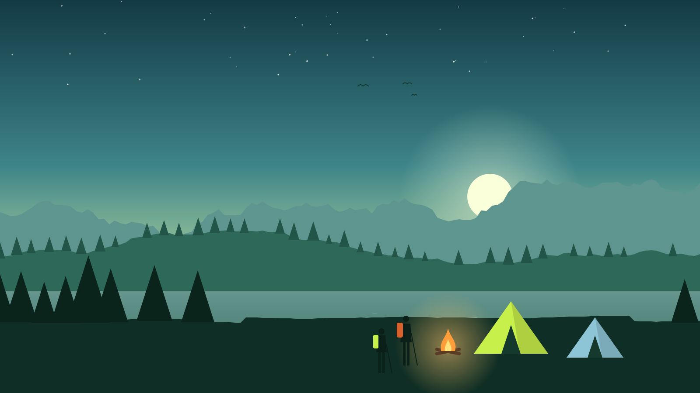
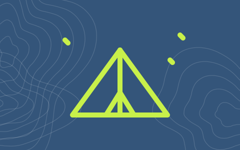
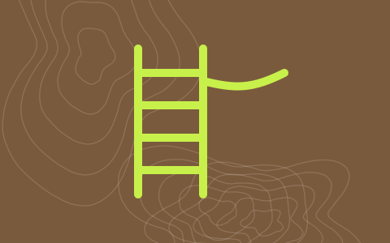
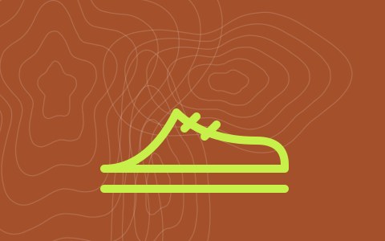

Guided trips in the Kestrel Ridge mountains
Hiking, camping & climbing adventures
Small groups, certified mountain guides and all the heavy gear carried for you. Pick a sunrise summit, a wild camping weekend or your first day on rock.
- 140 km of trails we guide on
- 1 : 6 guide to guest ratio
- 12 trips and courses
- 4.9 / 5 from 860 reviews
Activities
Five ways to get outside
Hiking
Day hikes and hut-to-hut treks on marked mountain trails, from gentle ridges to long summit days.
3 trips in hikingCamping
Wild camping, family forest camps and canoe trips with tents, stoves and food carried for you.
3 trips in campingClimbing
Rock climbing and via ferrata courses with certified guides, helmets and harnesses included.
3 trips in climbingTrail running
Trail running camps with coached sessions on technique, pacing and running downhill.
1 trip in trail runningSkills courses
Mountain navigation and outdoor first aid: the skills that keep your own trips safe.
2 trips in skills courses
Coming up this autumn
Popular guided trips
Hiking
Kestrel Ridge Traverse
The classic ridge walk with a night in a mountain hut and views over three valleys.
- Length
- 2 days
- Route
- 28 km · 1,900 m ascent
- Difficulty
- Challenging
from €190 per person

Camping
Wild Camping Weekend
Learn to pitch, cook and sleep comfortably under the stars far from any road.
- Length
- 2 days
- Route
- 16 km · 600 m ascent
- Difficulty
- Moderate
from €160 per person

Climbing
Via Ferrata Day
Climb a steel-cabled route with ladders and a suspension bridge, no experience needed.
- Length
- 1 day
- Route
- Eagle Wall · 450 m of cable
- Difficulty
- Moderate
from €95 per person

Trail running
Trail Running Camp
Coached runs, downhill technique, stretching and good food at a mountain lodge.
- Length
- 3 days
- Route
- 3 runs · 55 km in total
- Difficulty
- Moderate
from €260 per person
Difficulty guide
How hard is it?
Every trip has a grade, so you know what to expect before you book. Not sure? Ask a guide, we answer every message within a day.
Easy
Up to 4 hours of walking a day on good paths. Fine for families and first-timers with normal fitness.
Moderate
5–7 hours a day with steeper, rocky sections. You hike or run regularly and carry a day pack.
Challenging
Long days above 1,500 m, exposed ridges or technical climbing. Previous mountain experience needed.
Gear & packing list
We bring the heavy stuff
Tents, stoves and climbing equipment are included in the price and checked before every trip. You bring what fits your own feet and back. Missing something? Rent boots, packs and sleeping bags at our base in Vranje Polje.
Included in every trip
- Guide certified by the mountain rescue service
- Tents, sleeping mats and camp stoves
- Helmets, harnesses and ropes
- Meals on camping trips and hut nights
- First-aid kit, satellite messenger and permits
You bring
- Worn-in hiking boots or trail shoes
- Waterproof jacket and a warm layer
- Day pack of 25–35 litres
- 2 litres of water and snacks
- Headtorch, sun hat and sunscreen
Trip calendar
Next departures
- 4 places leftBook the Kestrel Ridge Traverse
Kestrel Ridge Traverse
2 days · meet at Vranje Polje base, 7:00 · hut night included
- 9 places leftBook the Wild Camping Weekend
Wild Camping Weekend
2 days · meet at Lake Sokol car park, 9:00 · food included
- 7 places leftBook the navigation course
Map, Compass & GPS Navigation
1 day · classroom at the base, then 8 km on the hill
- 11 places leftBook the Sunrise Summit Hike
Sunrise Summit Hike
1 day · meet at 4:30 · breakfast on Kestrel Peak
“I had never slept in a tent before. By Sunday I was pitching it in the wind and cooking pasta for six. Our guide made the hard parts feel easy.”
Book a trip
Save your place
Send a booking request and a guide will confirm your place, the meeting point and the packing list within one working day. You pay only after we confirm.
Free cancellation up to 14 days before departure. If the weather is unsafe, we move the date or refund you in full.